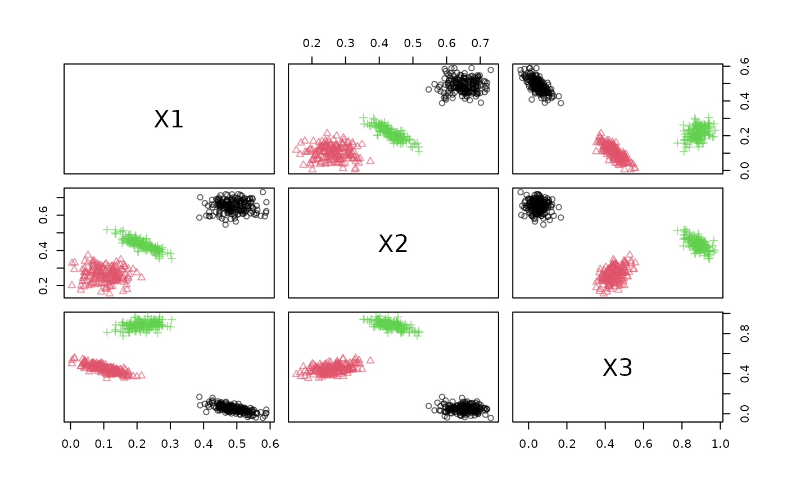
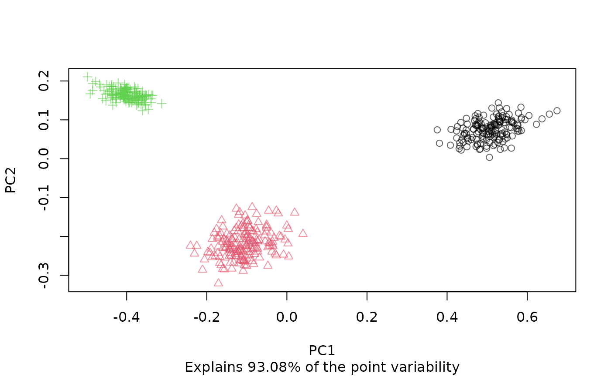
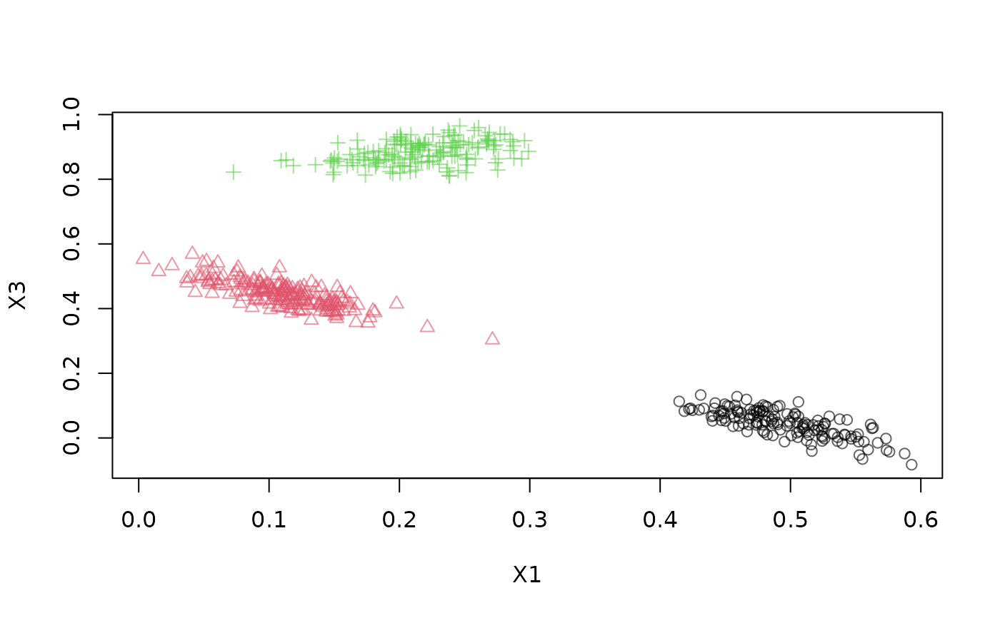
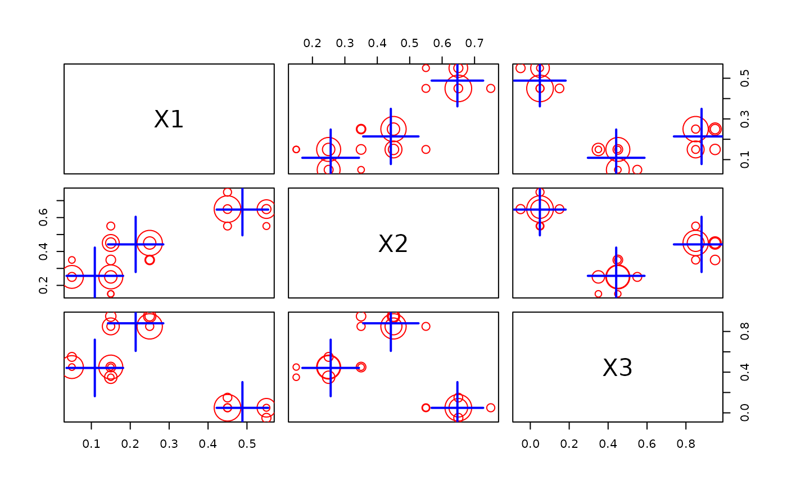
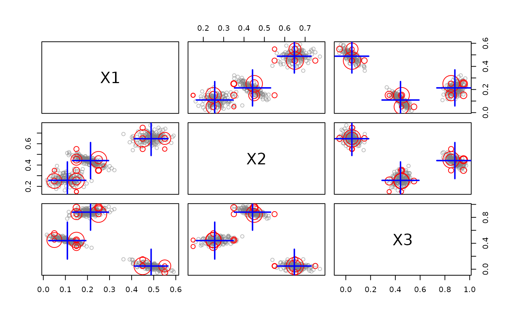
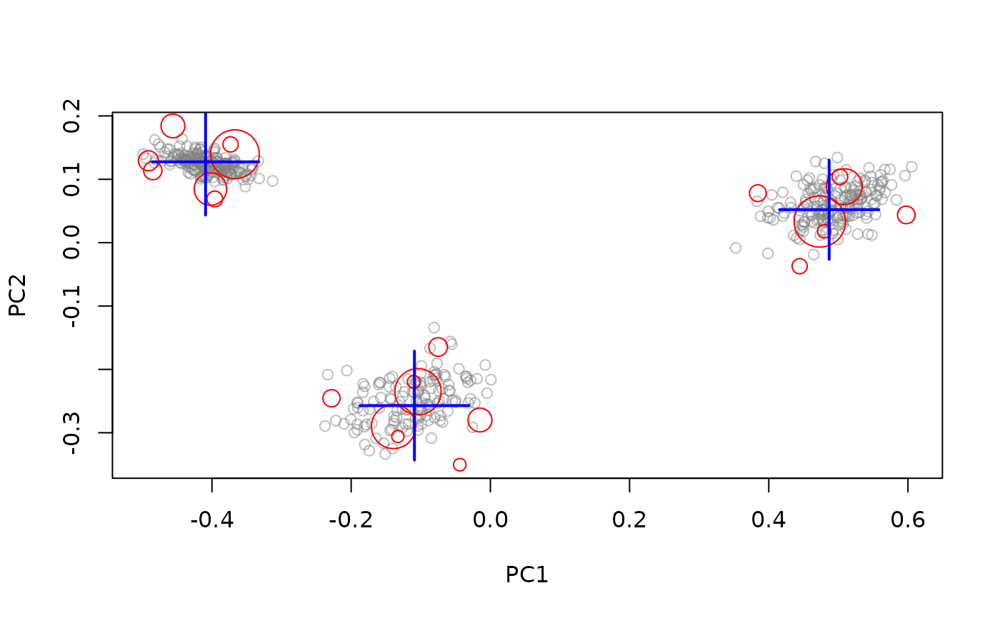
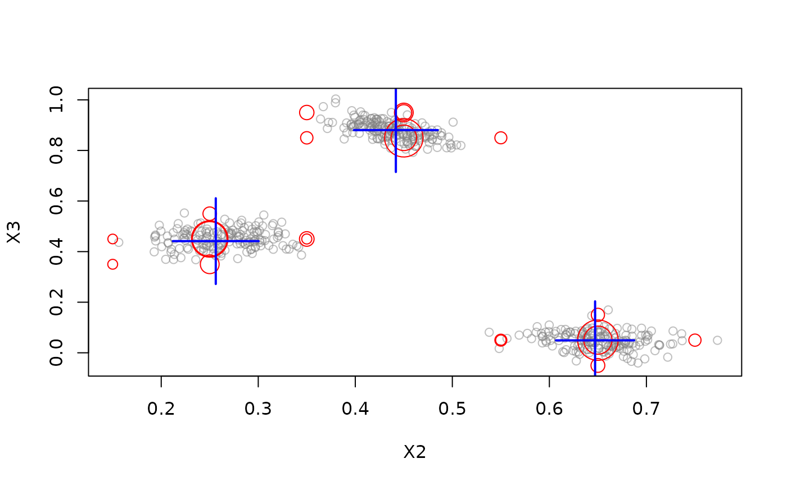
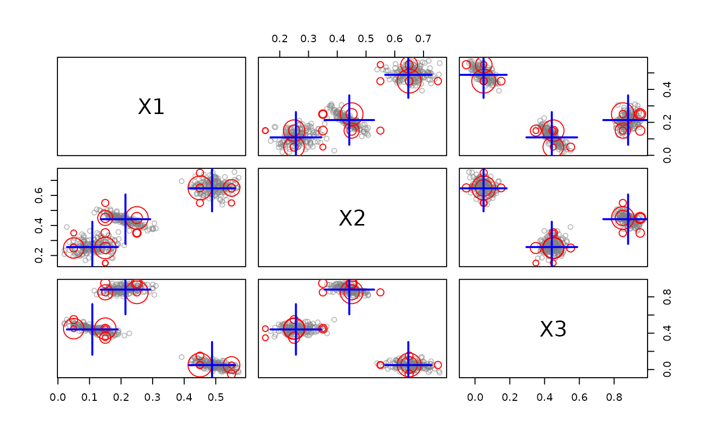
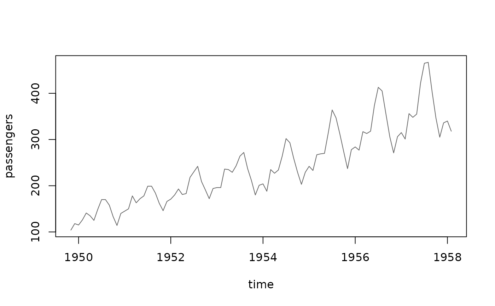

Method to plot data stream data. To plot DSC see plot.DSC().
Usage
# S3 method for class 'DSD'
plot(
x,
n = 500,
col = NULL,
pch = NULL,
...,
method = c("pairs", "scatter", "pca", "ts"),
dim = NULL,
alpha = 0.6,
transform = NULL
)Arguments
- x
the DSD object to be plotted.
- n
number of plots taken from
xto plot.- col
colors used for points.
- pch
symbol type.
- ...
further arguments are passed on to
graphics::plot.default()orgraphics::pairs().- method
method used for plotting:
"pairs"(pairs plot),"scatter"(scatter plot),"pca"(plot first 2 principal components), or"ts"(time series).- dim
an integer vector with the dimensions to plot. If
NULLthen for methodspairsand"pca"all dimensions are used and for"scatter"the first two dimensions are plotted.- alpha
alpha shading used to plot the points.
- transform
a function that maps data stream points onto a 2-D plane for plotting.
See also
Other DSD:
DSD(),
DSD_BarsAndGaussians(),
DSD_Benchmark(),
DSD_Cubes(),
DSD_Gaussians(),
DSD_MG(),
DSD_Memory(),
DSD_Mixture(),
DSD_NULL(),
DSD_ReadDB(),
DSD_ReadStream(),
DSD_Target(),
DSD_UniformNoise(),
DSD_mlbenchData(),
DSD_mlbenchGenerator(),
DSF(),
animate_data(),
close_stream(),
get_points(),
reset_stream()
Other plot:
animate_cluster(),
animate_data(),
plot.DSC()
Examples
stream <- DSD_Gaussians(k=3, d=3)
## plot data
plot(stream, n = 500)

plot(stream, method = "pca", n = 500)

plot(stream, method = "scatter", dim = c(1, 3), n = 500)

## create and plot micro-clusters
dstream <- DSC_DStream(gridsize = 0.1)
update(dstream, stream, 500)
plot(dstream)

## plot with data, projected on the first two principal components
## and dimensions 2 and 3
plot(dstream, stream)

plot(dstream, stream, method = "pca")

plot(dstream, stream, dim = c(2, 3))

## plot micro and macro-clusters
plot(dstream, stream, type = "both")

## plot a time series using the AirPassenger data with the total monthly
## passengers from 1949 to 1960) a as a stream
AirPassengers
#> Jan Feb Mar Apr May Jun Jul Aug Sep Oct Nov Dec
#> 1949 112 118 132 129 121 135 148 148 136 119 104 118
#> 1950 115 126 141 135 125 149 170 170 158 133 114 140
#> 1951 145 150 178 163 172 178 199 199 184 162 146 166
#> 1952 171 180 193 181 183 218 230 242 209 191 172 194
#> 1953 196 196 236 235 229 243 264 272 237 211 180 201
#> 1954 204 188 235 227 234 264 302 293 259 229 203 229
#> 1955 242 233 267 269 270 315 364 347 312 274 237 278
#> 1956 284 277 317 313 318 374 413 405 355 306 271 306
#> 1957 315 301 356 348 355 422 465 467 404 347 305 336
#> 1958 340 318 362 348 363 435 491 505 404 359 310 337
#> 1959 360 342 406 396 420 472 548 559 463 407 362 405
#> 1960 417 391 419 461 472 535 622 606 508 461 390 432
stream <- DSD_Memory(data.frame(
.time = time(AirPassengers),
passengers = AirPassengers))
get_points(stream, n = 10)
#> .time passengers
#> 1 1949.000 112
#> 2 1949.083 118
#> 3 1949.167 132
#> 4 1949.250 129
#> 5 1949.333 121
#> 6 1949.417 135
#> 7 1949.500 148
#> 8 1949.583 148
#> 9 1949.667 136
#> 10 1949.750 119
plot(stream, n = 100, method = "ts")
